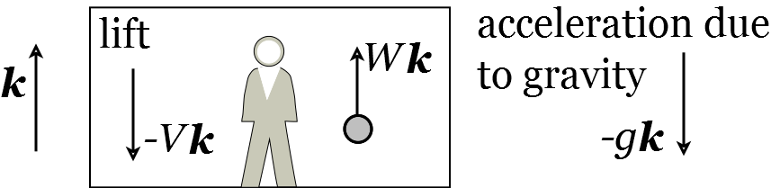

Lecture 19. More examples of motion with constant acceleration#
We will end this series of lectures on motion with constant acceleration with two examples.
Example 29
A student descending in a lift at constant speed \(V\) throws a ball vertically upwards with speed \(U\) relative to the lift. Find the time that elapses before the ball (a) has zero velocity relative to the lift, (b) returns to the student’s hand.
Solution.
As always, we start with a sketch (Figure 29).
Figure 29: Student in a lift.
(a) At time \(t\), let the velocity of the ball be \(\mathbf{v}_{B}(t)=W(t) \mathbf{k}\), where \(W(t)\) is a scalar function. At time \(t=0\),
Since we have constant acceleration, we can use the ‘suvat’ equations. In particular, we use Equation (211), which says that \(\mathbf{v}=\mathbf{u}+\mathbf{a} t\). Here, \(\mathbf{u}=\mathbf{v}_{B}(0)\) and \(\mathbf{a}=g \mathbf{k}\), so the velocity of the ball at time \(t\) is \(\mathbf{v}_{B}(t)=\mathbf{v}_{B}(0)-g t \mathbf{k}\). Therefore, combing Equation (237) and \(\mathbf{v}_{B}(t)=W(t) \mathbf{k}\), we have
Suppose the ball has zero velocity relative to the lift at time \(t=t_{1}\). Then the velocity of the ball is the same as the velocity of the lift, i.e. \(\mathbf{v}_{B}\left(t_{1}\right)=-V \mathbf{k}\). Since \(\mathbf{v}_{B}(t)=W(t) \mathbf{k}\), we have \(W\left(t_{1}\right)=-V\). Then, by Equation (239), \(U-V-g t_{1}=-V\). Consequently, \(t_{1}=U / g\), i.e. the ball has zero velocity relative to the lift at time \(t=U / g\). (b) At time \(t\), let the location of the ball, relative to its starting location, be \(\mathbf{x}_{B}(t)\). Here, we use Equation (212) to give
where the final equality comes from using Equation (239) with \(t=0\). Denote the location of the student’s hand at time \(t\) by \(\mathbf{x}_{S}(t)\), so that \(\mathbf{x}_{S}(t)=-V t \mathbf{k}\). Suppose the ball returns to the student’s hand at a time \(t=t_{2}\). Then \(\mathbf{x}_{B}\left(t_{2}\right)=\mathbf{x}_{S}\left(t_{2}\right)=\) \(-V t_{2} \mathbf{k}\). Therefore, using Equation (240) with \(t=t_{2}\),
Therefore either \(t_{2}=0\) (time of projection) or
Thus the ball returns to the student’s hand at time \(t=2 U / \mathrm{g}\).
Example 30
A particle is projected from the origin with speed \(V\) at an angle \(\theta\) above the horizontal. There is no air resistance. Show that (a) The maximum height of the particle above the point of projection is
(b) The time at which the particle returns to the same vertical level as the point of projection is
(c) When the particle returns to the same vertical level as the point of projection its horizontal distance from the point of projection is
Solution.
Recall the following formulae for a projectile from Equations (225), (226), (228), and (229)
(a) Let \(t=t_{H}\) be the time the projectile reaches maximum height. Then \(\dot{z}\left(t_{H}\right)=0\), so by
Equation (248),
Therefore the maximum height is
(b) The particle returns to the level of projection when \(z(T)=0\) so, by Equation (246),
The solution \(T=0\) is the time of projection. Therefore the time when the particle returns to the level of projection is
(c) Using Equation (245) with \(t=T\) and the value of \(T\) from Equation 252 gives
Lecture 19 Homework exercises#
Exercise 41.
A bus starts from rest and moves along a straight road with constant acceleration \(f\) until its speed is \(V\). The bus then continues at constant speed \(V\). When the bus starts, a car is at a distance \(b\) behind the bus and is moving in the same direction with constant speed \(u\). Find the distance of the car behind the bus at time \(t\) after the bus has started (a) For \(0<t<\frac{V}{f}\); (b) For \(t>\frac{V}{f}\).
Show that the car cannot overtake the bus during the period \(0<t<\frac{V}{f}\) unless \(u^{2}>2 f b\). Find the minimum distance between the car and the bus in the case when \(u^{2}<2 \mathrm{fb}\) and \(u<V\).
Exercise 42.
A pirate shoots a cannon aiming to hit a merchant sailor’s ship 500 m away. The muzzle speed of the cannon (i.e. the speed that the cannon ball is released from the cannon) is \(100 \mathrm{~ms}^{-1}\). What angle does should the cannon make to the horizontal in order to hit the merchant sailor’s ship?
Exercise 43.
A particle \(P\) is moving along a straight line, such that, after \(t\) seconds its displacement from a fixed point \(A\) is \(s\) metres, its velocity is \(v \mathrm{~ms}^{-1}\) and its acceleration is \(a \mathrm{~ms}^{-2}\). You are given that \(s=4 t^{3}-33 t^{2}+54 t\). Consider the motion of \(P\) between times \(t=0\) and \(t=6\). (a) Find \(v\) and \(a\). (b) Find the times at which the particle \(P\) is at \(A\). (c) Find the greatest value of the distance \(A P\). (d) Find the greatest speed attained by \(P\). (e) Sketch the graph of displacement as a function of time \(t\). (f) Sketch the velocity-time graph for the motion of \(P\). (g) Find the total distance travelled by \(P\).